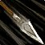
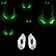

开场 / 首领 1
腐蚀唾液上身魔法持续伤害
→ 清洁术
清洁术
给中减益的人驱散。名字像毒，实际是魔法效果；别等持续伤害把血线压下去。
开场和一号先驱散腐蚀唾液、断心药膏；二号把保护祝福交给影舞步里最危险的队友；三号用圣盾术保自己、牺牲祝福保中碾压的人。尾王看到古尔丹之指，先分散，再开圣佑术。
以白白月光这场为例；18:54–18:56 的三个技能集中使用，先光环掌握，再圣盾、牺牲。
先把四个信号和四个按键对上，再安排整场冷却。
给中减益的人驱散。名字像毒，实际是魔法效果；别等持续伤害把血线压下去。
给血线最差、没有自保的非坦克。保护能挡弹幕；货物的火焰伤害仍要刷。
自己顶不住就开圣盾，缓解后续压力；牺牲祝福另给危险队友。
先和队友拉开 6 码，再用圣佑顶住自身这一击，别把多个落点叠在一起。
把物理弹幕和火焰伤害分开处理，祝福才交得值。
赞恩的影舞步会连续扫射全队。它虽然无视护甲，仍然属于物理伤害，保护祝福可以替一名队友挡住这轮弹幕。
这一轮的关键是替一个人挡住弹幕，让治疗能照顾其他人。保护祝福不会替全队免伤。
影舞步无视护甲，但物理免疫依然有效。
保护祝福挡不住邪能灌注货物；仍需减伤和治疗。
先确认自己扛得住转伤；不要在自身残血时硬接。
首领顺序固定，波次沿用上面这场；换路线时，按机制信号调整技能。
粉框是这个副本优先安排的技能；自律会限制圣盾术、保护祝福和圣疗术。
先分清魔法、中毒、流血和诅咒，再决定驱散、祝福还是刷血。
| 减益 | 类型 | 奶骑手段 | 怎么处理 |
|---|---|---|---|
腐蚀唾液 | 魔法 | 清洁术 | 开场浮龙和一号咬咬都会施加，看到就驱 |
| 中毒 | 清洁术 | 需强化清洁术；会叠层并降低最大生命值 | |
妙手空空 | 流血 | 保护祝福 / 自身圣盾 | 清洁术不能解；自己先圣佑减伤 |
 锋利之甲 | 流血 | 保护祝福 | 危险非坦克可保护；其余情况减伤、治疗 |
| 火焰 | 自身圣盾术 / 牺牲减伤 | 不能靠保护免疫；队友受伤要继续刷血 | |
| 点名火焰 | 先放位置，再减伤 | 爆炸会波及附近的人，不能在人群里硬顶 | |
 厄运诅咒 | 诅咒 | 奶骑不能驱 | 交给能解诅咒的队友；提前报点名 |
| 引导 | 自身圣盾保命 | 队伍优先处理引导，别只靠治疗硬扛 |
白白月光这场的神圣天赋，英雄天赋光铸者。按当前版本检查天赋后使用。
CEEAAAAAAAAAAAAAAAAAAAAAAAAAgZBAmBAAWGwMzyMzsMjZMsY2MziZaiZxYmZGjZLDADAbgNWMzAAAAzMLLLWmZYjthBbAzsNAAzMAMjxoB在游戏天赋界面选择「导入」。若复制受浏览器限制，点选字符串后按 ⌘C / Ctrl+C。